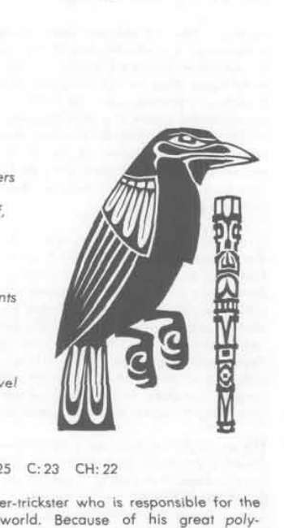
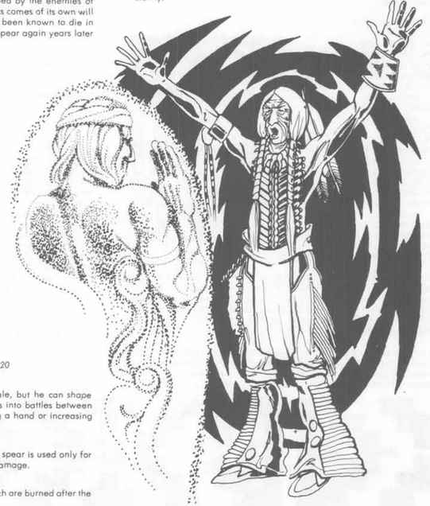

雷鸟与 · Thunder Bird 与 Yanauuluha
独一无二的混乱善良雷鸟，AC −2，200 点生命值，魔法抗性 32%，移动 15／24 英寸；鸟喙造成 1–10 点，双翼各造成 2–20 点，并能每轮向 50–300 码内目标释放 30 点闪电。它从不被突袭，常在邪恶力量威胁部族时自行出现，战斗结束前不会离开。
Yanauuluha 是中立的第一位部族牧师，200 点生命值，13 级德鲁伊／20 级牧师、10 级巡林客、9 级魔法师／幻术师；他能召来本神话体系的任何灵体。献祭后每次有 10% 几率现身，以富贵老者形象缓慢交谈并亲自协助部族。

